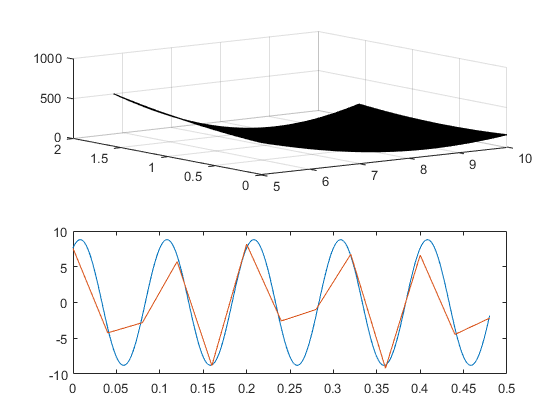
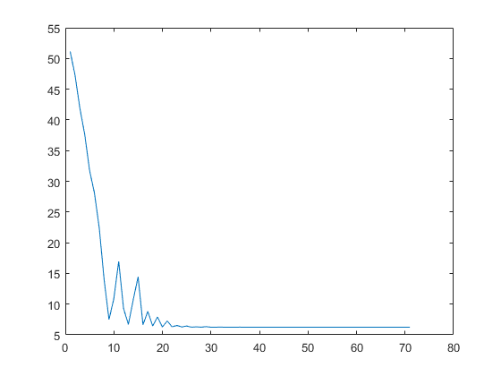

Homework 1
Justin Garcia Due: 9/13/2016
Contents
- Problem 1 - Develop a script (and a function) for sine signal identification.
- Problem 2 - Create nested for loops which vary x(1) and x(2) within their given ranges with 100 linearly spaced increments:
- Problem 2 Continued: Write a piece of code that finds the minimum value of CumError and corresponding x1 and x2 values (x1_opt and x2_opt).
- Problem 3 - Using the built in optimization function
- Problem 4 -
- Appendix of funstions
- SineQuadraticError
- Function File : Sine Quadratic Error
- MinErrorFunction
Problem 1 - Develop a script (and a function) for sine signal identification.
clear all; close all; clc
ExpData = xlsread('SineWaveData.xlsx'); x1 = ExpData(:,1); x2 = ExpData(:,2); M = 5; f = 10; phi = 0; for i = 1:length(x1) for j = 1:length(x2) x = [x1(i) x2(j)]; Error(i,j) = SineQuadraticError(x); % This creates a 13x13 matrix TotalError = diag(Error);% We take advantage that the diagonal values of this matrix has matching indices, which corresponds to the original matching values we want to calculate together TotalError = sum(TotalError); % This is the sum of those thirteen entries end end
Problem 2 - Create nested for loops which vary x(1) and x(2) within their given ranges with 100 linearly spaced increments:
After discussing the homework problem with my peers I learned that it is better in this case to use the .* command to go element by element instead of trying to use 4 for loops. Old code can be found in the appendix along with function MinimumSineQuadraticError.
ExpData = xlsread('SineWaveData.xlsx'); h1 = ExpData(:,1); h2 = ExpData(:,2); f2 = 10; A = (5:5/99:10); phi2 = (0:pi/198:pi/2); for i = 1:length(A) for j = 1:length(phi2) x = [A(i) phi2(j)]; AccumulatedError(i,j) = MinErrorFunction(x); VectorError = AccumulatedError(:); end end % -------------------------------------------------------------------------
Problem 2 Continued: Write a piece of code that finds the minimum value of CumError and corresponding x1 and x2 values (x1_opt and x2_opt).
tic ExpData = xlsread('SineWaveData.xlsx'); h1 = ExpData(:,1); h2 = ExpData(:,2); f2 = 10; A = (5:5/99:10); phi2 = (0:pi/198:pi/2); A_opt = 0; phi_opt = 0; LowestOutput = 1000; for i = 1:length(A) for j = 1:length(phi2) x = [A(i) phi2(j)]; AccumulatedError(i,j) = MinErrorFunction(x); if AccumulatedError(i,j) < LowestOutput A_opt = A(i); phi_opt = phi2(j); LowestOutput = AccumulatedError(i,j); end VectorError = AccumulatedError(:); end end toc disp(['Estimated amplitude is: ' num2str(A_opt) '[V]']) disp(['Estimated phase shift is: ' num2str(phi_opt) '[Radians]']) disp(['Estimated minimum error is: ' num2str(LowestOutput) '[units]']) figure(1) subplot(2,1,1) surf(A,phi2,AccumulatedError) hold on t_sim = [0:0.001:(ExpData(end,1))]; y_sim = A_opt*sin(2*pi*10*t_sim + phi_opt); % y_sim = y_sim(:); subplot(2,1,2) plot(t_sim,y_sim) hold on plot(h1,h2)
Elapsed time is 13.924224 seconds. Estimated amplitude is: 8.7879[V] Estimated phase shift is: 1.0472[Radians] Estimated minimum error is: 6.2391[units]
Problem 3 - Using the built in optimization function
A_opt2 = 8.7879; phi_opt2 = phi_opt; x1_initial = 7.5; x2_initial = pi/4; [A_opt2,phi_opt2] = fminsearch('MinErrorFunction',[x1_initial x2_initial]); A_opt2 = A_opt2(end);%before i was using only the variables A_opt and phi_opt but for some reason the second num2strng command turned A_opt into a 1x2 matrix so my temporary solution was to create A_opt2 and let that become concatenated and then take its last value. disp(['Estimated amplitude is: ' num2str(A_opt2) '[V]']) disp(['Estimated phase shift is: ' num2str(phi_opt2) '[Radians]'])
Estimated amplitude is: 1.0492[V] Estimated phase shift is: 6.2368[Radians]
Problem 4 -
tic
CumErrorTrace = [];
A_opt2 = 8.7879;
phi_opt2 = phi_opt;
x1_initial = 7.5;
x2_initial = pi/4;
[A_opt2,phi_opt2] = fminsearch('MinErrorFunction',[x1_initial x2_initial]);
A_opt2 = A_opt2(end);
figure(2); plot(CumErrorTrace);
toc
Elapsed time is 0.164397 seconds.
Appendix of funstions
SineQuadraticError
Function File : Sine Quadratic Error
function Error = SineQuadraticError(x)
M = evalin('base','M');
f = evalin('base','f');
phi = evalin('base','phi');ym = x(2); yk = M*sin(2*pi*f*(x(1)) + phi); Error = (ym - yk)^2; end
MinErrorFunction
% function AccumulatedError = MinErrorFunction(x) % t = evalin ('base','h1'); % Volts = evalin ('base','h2'); % f = evalin('base','f2'); % % yk = x(1)*sin(t.*2*pi*f + x(2)); % Error = (Volts - yk).^2; % AccumulatedError = sum(Error); % CumErrorTrace = evalin('base','CumErrorTrace'); % CumErrorTrace = [CumErrorTrace AccumulatedError]; % assignin('base','CumErrorTrace',CumErrorTrace); % % end